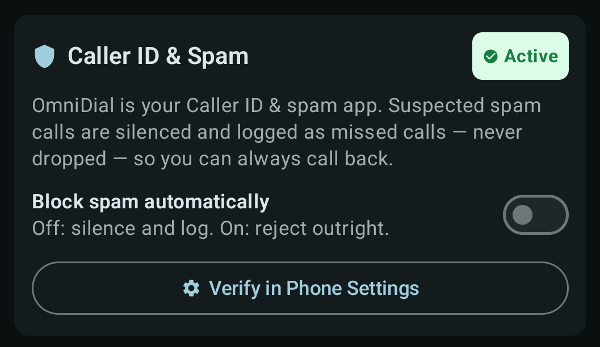
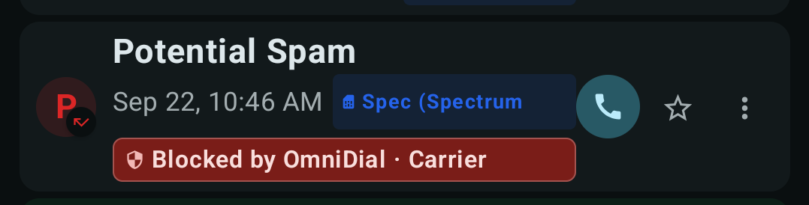

Block nuisance callers in one tap, switch on automatic defenses, and read who's calling at a glance with trust badges.
Everything spam-related lives in one place: open Settings and tap the Spam & Blocked Calls card. You'll see your blocked list, a search box, and the auto-block presets.

In Settings, tap Set as Caller ID & Spam App and confirm the system prompt. From then on, suspected spam calls are silenced and logged as missed calls — never silently dropped — so a flagged call you wanted is never lost.
Three ways, fastest first:
Don't want to block numbers one by one? The auto-block presets are one-tap defenses against known top spammers, private/restricted numbers, and suspicious foreign prefixes. Switch on the ones that fit your life.
On incoming calls and in your call history, OmniDial labels callers so you can decide in a glance:

When OmniDial stops a call, the badge names who stopped it and why — for example Blocked by OmniDial · Carrier flagged as spam. No more guessing whether your carrier or the app dropped it.
Blocked someone by mistake? Open the spam center, find the number in your blocked list, and remove it. It takes effect immediately.